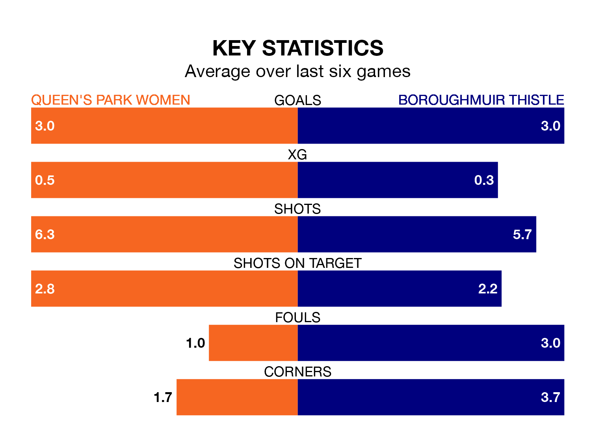

SWPL 2's top two sides face each other at Lochinch Pavilion in Sunday's kick-off, when Queen's Park Women host second-placed Boroughmuir Thistle.
Queen's Park have picked up 12 wins from 13 games so far this season, and sit 12 points above the visitors going into the 3pm match.
Boroughmuir Thistle, meanwhile, have won seven and drawn three, picking up 24 points.
With 46 goals in 13 games so far this season, Queen's Park are the league's highest scorers with 3.5 goals per game. And they are conceding fewer than average, letting in 10 goals at a rate of 0.8 per game.
Boroughmuir Thistle are also above average scorers, with 2.4 goals per game, compared to a league average of 1.9. They have conceded 0.8 goals per game.
The hosts are in exceptional form in SWPL 2, with six wins and no losses from their last six games.
With five wins and a draw over that period, the away side's form is slightly worse – they have taken 16 points from 18, compared to Queen's Park's 18.
Over the last two years, Queen's Park and Boroughmuir Thistle have played each other on eight occasions. Queen's Park won three of them, Boroughmuir Thistle four, and they drew once.
On average, Queen's Park scored 1.9 goals and Boroughmuir Thistle 2.2 in those matches.
Their last meeting was on October 15, when Queen's Park won 3-0 away.
Queen's Park's last match was on December 17, a 1-0 win against Livingston Women, with getting the goal for Queen's Park.
Boroughmuir Thistle beat St. Johnstone Women 2-0 last time out, also on December 17, with on the scoresheet.
Updated: 15:34, 08/01/24